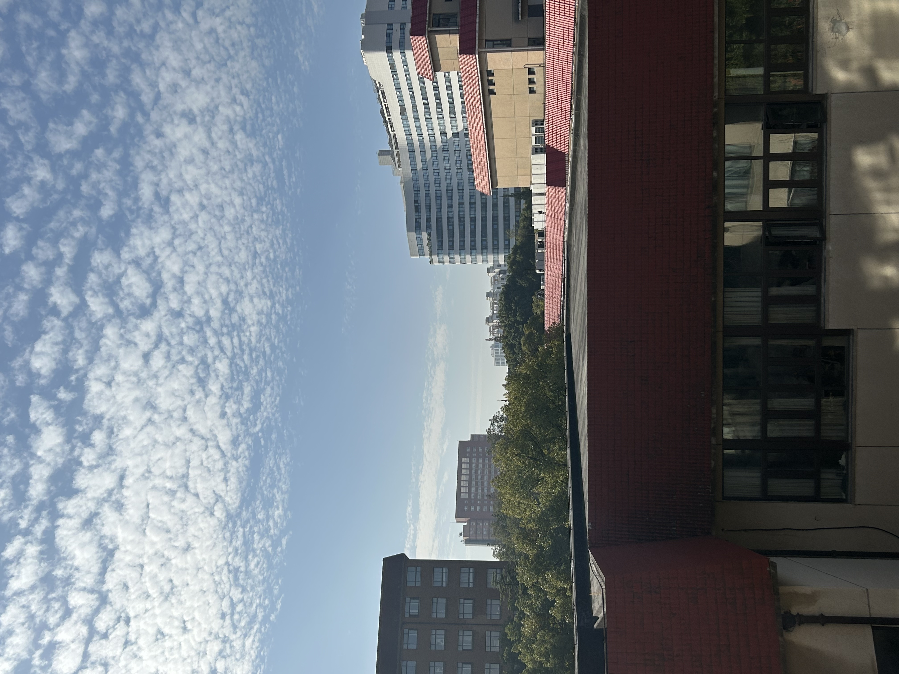
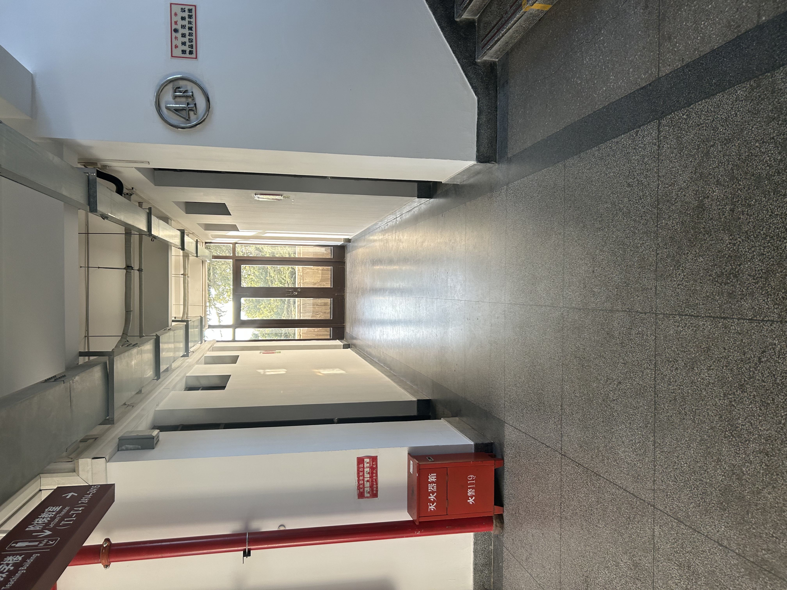

Start Here
作品链接: https://pan.quark.cn/s/462b97d35e92
这是我在2023.10.22剪的一个视频，也是我大学剪的第一个视频，现在写个Blog记录一下。
Material
Video
Music
- The Midnight - Avalanche
- Virginia To Vegas - Yesterday
- Cannons - Bad Dream
- Broods - 1000x
- Pretty Young - Horizon
- Tyga - Juicy
- Lorde - Perfect Place
- Jonathan & Friends - Start up
- Taylor Swift - Style
- Miles Away - Back To Sleep
- Clara Mae - Not Sad Anymore
Chat
Why doing such things?
为什么要剪这种视频，我觉得可以从我高中的时候说起。那个时候，经常困扰我的一个事情，就是高中老师总挂在嘴边的：怎么学习，怎么更好地学习，一个很功利的目的。
然后想了很多办法，当时主要就靠打鸡血，喝鸡汤，一般就是努力，努力，努力，然后喝鸡汤，然后干，干，干就结束了·。
到了高二，鸡汤实在喝不下去了，太累了。情绪上、感官上都很累，当时就直接摆烂了很久，主要是因为以前那种方式完全没用了，自己本身也不认同那套思维模式。
应该是21年还是22年那个时间点，就是当时这种类型的视频——开个车，放个音乐，看看风景的那种——现在挺多的，但当时真的非常少见，也不知道怎么就被我碰到了。我当时就特别喜欢这种类型的视频，基本都是40到60分钟的长度。
看这种视频，不像别的视频那样让你激动，反而会让你心情比较平静。我就发现，心情平静下来之后，再去做事，就感觉比较得心应手了——倒也不是说立马变厉害，但相对以前来说，确实容易好多了。
到了22年之后，也就是高三那会儿，我就渐渐喜欢找这类视频来调节情绪。因为高三压力大，也没什么别的选择去做别的事，比如郊游这种。我也试过一些别的方式来调节情绪，比如冥想这种，但是过程相对来说会比较无聊，因为看这种视频至少还会动，冥想的话真的就是一个小时什么都不做，眼前的东西都不带变的。
回到刚才的话题，我在高三大概看了好多这样的视频。其中西雅图的那个，我看得最多，原版大概34分钟。除了西雅图，还有纽约、旧金山、德克萨斯之类的，但那些我现在记得不太清了。
最可惜的是那个博主退网了，退网前把所有视频全删了。我现在剪的这个，其实是凭记忆对那个视频的一个复刻。因为没有原片参考，曲目的选择可能跟原版会有点出入。
至于为什么进了大学还要继续做？主要还是想找点别的兴趣爱好吧。感觉如果只盯着读书，人就像个空心人一样，也没啥意思。
About the Video
然后来谈谈这个视频本身。我觉得它的配乐风格还是偏冷感一些的。它不像那种很动感的音乐能让你心潮澎湃，而是那种比较冷的音乐，能让人冷静下来。当然，也不是死亡金属那种太夸张的，就是比较单调、平缓的音乐，我觉得就很OK了。
视频内容的话我个人可能比较喜欢傍晚到晚上这段时间的街拍，如果是白天，总觉得差点味道。
说到西雅图，也挺有意思的。它基本上是个沿海城市，在美国的角落上—，当然我地理不是很好，它应该是在波特兰上面吧。它那里的红绿灯是挂在空中的线上，海风一吹就在那儿晃，特别有感觉。
因为美国地广人稀嘛，那边人比较少。你看它傍晚的灯光很绚丽，连树上都挂好了那种霓虹灯。又是冬天，冬天的傍晚还是挺冷的，凉风瑟瑟的。人少，城市就显得冷清。这种绚丽的灯光和冷清的氛围形成了一种对比，我觉得很有感觉，能让人有一些思考。
Final
最后，小小地做一个总结吧。因为这也不是什么正儿八经的介绍节目，它就是一篇心情随笔，也不是严格编辑出来的，还是比较随性的一个东西。 主要就是希望以后能多做一些这样的事情。一方面，这种事在情绪上能有个比较好的调节作用；另一方面，我觉得有了这种东西，能让人勾起一些回忆。 这个视频是我在23年10月22号剪的，当时刚大一，也算是比较有里程碑意义的一件事吧。最后附上一些照片，就是当时大一去二教四楼死磕数学分析的时候拍的。那时候也不会学，就知道硬啃书本，留下了一些照片，就放上来吧，当个回忆。
|
 |
 |